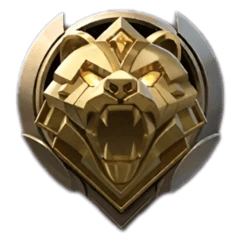

Мастер (Master): Ранг для тех, кто понял основы. 4 дивизиона (IV, III, II, I), 4 звезды для продвижения. Важно начать следить за картой.
На начальных стадиях рейтинговой игры вашими противниками в основном будут боты, так как игроки только знакомятся с системой рангов. Поэтому до грандмастера необходимо выполнять следующее: